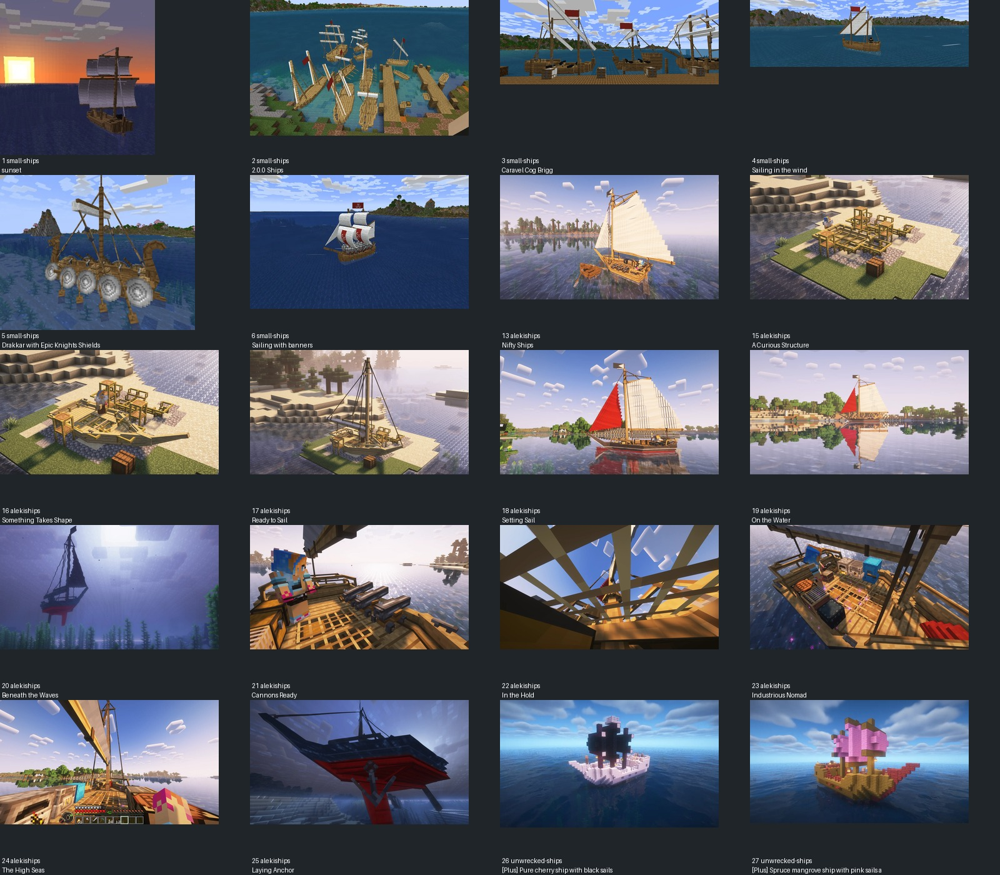
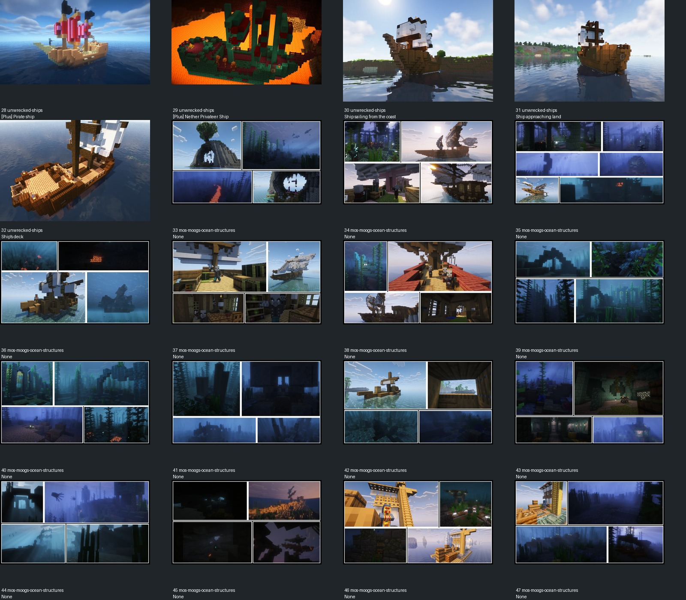
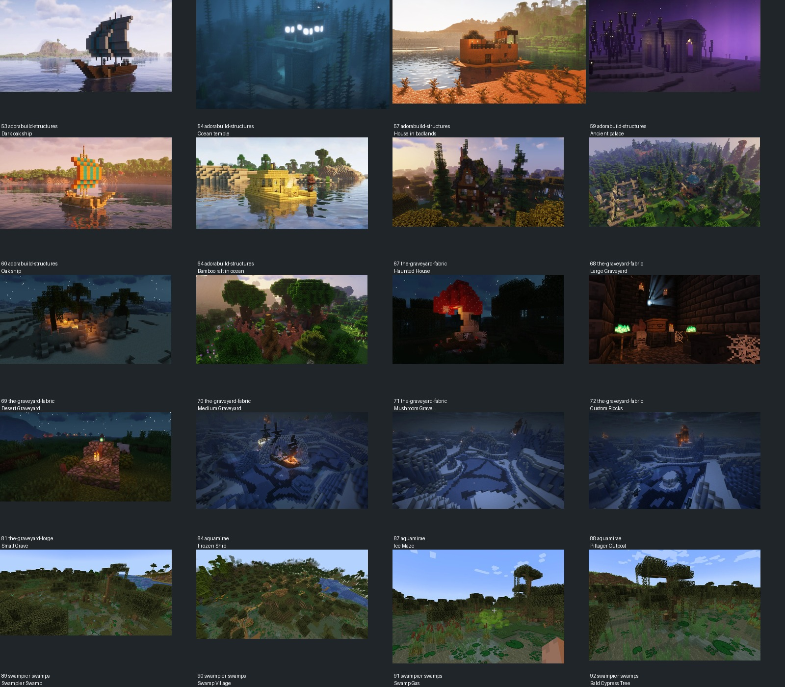
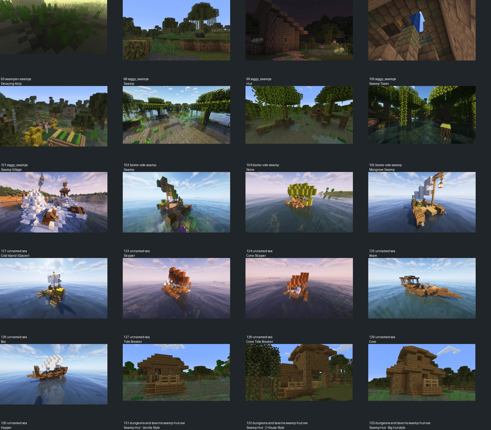
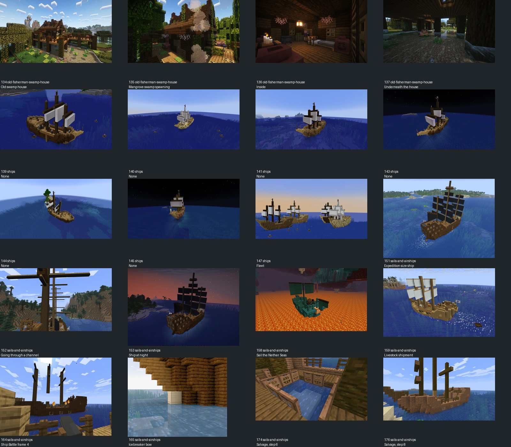

仅学习结构与材质组织；资产没有复制进模型。来源、哈希、借鉴点见reference-index.json。





1 Small Ships · 船腹收窄、甲板留空、桅杆穿入甲板和帆面主次；不采用西式船首、海盗旗、火炮。
2 Small Ships · 船腹收窄、甲板留空、桅杆穿入甲板和帆面主次；不采用西式船首、海盗旗、火炮。
3 Small Ships · 船腹收窄、甲板留空、桅杆穿入甲板和帆面主次；不采用西式船首、海盗旗、火炮。
4 Small Ships · 船腹收窄、甲板留空、桅杆穿入甲板和帆面主次；不采用西式船首、海盗旗、火炮。
5 Small Ships · 船腹收窄、甲板留空、桅杆穿入甲板和帆面主次；不采用西式船首、海盗旗、火炮。
6 Small Ships · 船腹收窄、甲板留空、桅杆穿入甲板和帆面主次；不采用西式船首、海盗旗、火炮。
13 aleki's Nifty Ships · 船腹收窄、甲板留空、桅杆穿入甲板和帆面主次；不采用西式船首、海盗旗、火炮。
15 aleki's Nifty Ships · 船腹收窄、甲板留空、桅杆穿入甲板和帆面主次；不采用西式船首、海盗旗、火炮。
16 aleki's Nifty Ships · 船腹收窄、甲板留空、桅杆穿入甲板和帆面主次；不采用西式船首、海盗旗、火炮。
17 aleki's Nifty Ships · 船腹收窄、甲板留空、桅杆穿入甲板和帆面主次；不采用西式船首、海盗旗、火炮。
18 aleki's Nifty Ships · 船腹收窄、甲板留空、桅杆穿入甲板和帆面主次；不采用西式船首、海盗旗、火炮。
19 aleki's Nifty Ships · 船腹收窄、甲板留空、桅杆穿入甲板和帆面主次；不采用西式船首、海盗旗、火炮。
20 aleki's Nifty Ships · 船腹收窄、甲板留空、桅杆穿入甲板和帆面主次；不采用西式船首、海盗旗、火炮。
21 aleki's Nifty Ships · 船腹收窄、甲板留空、桅杆穿入甲板和帆面主次；不采用西式船首、海盗旗、火炮。
22 aleki's Nifty Ships · 船腹收窄、甲板留空、桅杆穿入甲板和帆面主次；不采用西式船首、海盗旗、火炮。
23 aleki's Nifty Ships · 船腹收窄、甲板留空、桅杆穿入甲板和帆面主次；不采用西式船首、海盗旗、火炮。
24 aleki's Nifty Ships · 船腹收窄、甲板留空、桅杆穿入甲板和帆面主次；不采用西式船首、海盗旗、火炮。
25 aleki's Nifty Ships · 船腹收窄、甲板留空、桅杆穿入甲板和帆面主次；不采用西式船首、海盗旗、火炮。
26 Unwrecked Ships · 船腹收窄、甲板留空、桅杆穿入甲板和帆面主次；不采用西式船首、海盗旗、火炮。
27 Unwrecked Ships · 船腹收窄、甲板留空、桅杆穿入甲板和帆面主次；不采用西式船首、海盗旗、火炮。
28 Unwrecked Ships · 船腹收窄、甲板留空、桅杆穿入甲板和帆面主次；不采用西式船首、海盗旗、火炮。
29 Unwrecked Ships · 船腹收窄、甲板留空、桅杆穿入甲板和帆面主次；不采用西式船首、海盗旗、火炮。
30 Unwrecked Ships · 船腹收窄、甲板留空、桅杆穿入甲板和帆面主次；不采用西式船首、海盗旗、火炮。
31 Unwrecked Ships · 船腹收窄、甲板留空、桅杆穿入甲板和帆面主次；不采用西式船首、海盗旗、火炮。
32 Unwrecked Ships · 船腹收窄、甲板留空、桅杆穿入甲板和帆面主次；不采用西式船首、海盗旗、火炮。
33 MOS - Moog's Ocean Structures · 海上结构与水下残骸的暗轮廓、断续亮点、木梁连接；拼图每张只计一次，不将光影反射视作PNG。
34 MOS - Moog's Ocean Structures · 海上结构与水下残骸的暗轮廓、断续亮点、木梁连接；拼图每张只计一次，不将光影反射视作PNG。
35 MOS - Moog's Ocean Structures · 海上结构与水下残骸的暗轮廓、断续亮点、木梁连接；拼图每张只计一次，不将光影反射视作PNG。
36 MOS - Moog's Ocean Structures · 海上结构与水下残骸的暗轮廓、断续亮点、木梁连接；拼图每张只计一次，不将光影反射视作PNG。
37 MOS - Moog's Ocean Structures · 海上结构与水下残骸的暗轮廓、断续亮点、木梁连接；拼图每张只计一次，不将光影反射视作PNG。
38 MOS - Moog's Ocean Structures · 海上结构与水下残骸的暗轮廓、断续亮点、木梁连接；拼图每张只计一次，不将光影反射视作PNG。
39 MOS - Moog's Ocean Structures · 海上结构与水下残骸的暗轮廓、断续亮点、木梁连接；拼图每张只计一次，不将光影反射视作PNG。
40 MOS - Moog's Ocean Structures · 海上结构与水下残骸的暗轮廓、断续亮点、木梁连接；拼图每张只计一次，不将光影反射视作PNG。
41 MOS - Moog's Ocean Structures · 海上结构与水下残骸的暗轮廓、断续亮点、木梁连接；拼图每张只计一次，不将光影反射视作PNG。
42 MOS - Moog's Ocean Structures · 海上结构与水下残骸的暗轮廓、断续亮点、木梁连接；拼图每张只计一次，不将光影反射视作PNG。
43 MOS - Moog's Ocean Structures · 海上结构与水下残骸的暗轮廓、断续亮点、木梁连接；拼图每张只计一次，不将光影反射视作PNG。
44 MOS - Moog's Ocean Structures · 海上结构与水下残骸的暗轮廓、断续亮点、木梁连接；拼图每张只计一次，不将光影反射视作PNG。
45 MOS - Moog's Ocean Structures · 海上结构与水下残骸的暗轮廓、断续亮点、木梁连接；拼图每张只计一次，不将光影反射视作PNG。
46 MOS - Moog's Ocean Structures · 海上结构与水下残骸的暗轮廓、断续亮点、木梁连接；拼图每张只计一次，不将光影反射视作PNG。
47 MOS - Moog's Ocean Structures · 海上结构与水下残骸的暗轮廓、断续亮点、木梁连接；拼图每张只计一次，不将光影反射视作PNG。
53 AdoraBuild: Structures · 有限方块表现船首/船尾、低舷和敞开甲板；不照搬配色与船型。
54 AdoraBuild: Structures · 水边或幽暗环境的主体/背景明度关系及旧木/暗石组织；只研究氛围，不复制建筑、不把着色器反射烘进纹理。
57 AdoraBuild: Structures · 水边或幽暗环境的主体/背景明度关系及旧木/暗石组织；只研究氛围，不复制建筑、不把着色器反射烘进纹理。
59 AdoraBuild: Structures · 水边或幽暗环境的主体/背景明度关系及旧木/暗石组织；只研究氛围，不复制建筑、不把着色器反射烘进纹理。
60 AdoraBuild: Structures · 有限方块表现船首/船尾、低舷和敞开甲板；不照搬配色与船型。
64 AdoraBuild: Structures · 有限方块表现船首/船尾、低舷和敞开甲板；不照搬配色与船型。
67 The Graveyard (FABRIC) · 水边或幽暗环境的主体/背景明度关系及旧木/暗石组织；只研究氛围，不复制建筑、不把着色器反射烘进纹理。
68 The Graveyard (FABRIC) · 水边或幽暗环境的主体/背景明度关系及旧木/暗石组织；只研究氛围，不复制建筑、不把着色器反射烘进纹理。
69 The Graveyard (FABRIC) · 水边或幽暗环境的主体/背景明度关系及旧木/暗石组织；只研究氛围，不复制建筑、不把着色器反射烘进纹理。
70 The Graveyard (FABRIC) · 水边或幽暗环境的主体/背景明度关系及旧木/暗石组织；只研究氛围，不复制建筑、不把着色器反射烘进纹理。
71 The Graveyard (FABRIC) · 水边或幽暗环境的主体/背景明度关系及旧木/暗石组织；只研究氛围，不复制建筑、不把着色器反射烘进纹理。
72 The Graveyard (FABRIC) · 水边或幽暗环境的主体/背景明度关系及旧木/暗石组织；只研究氛围，不复制建筑、不把着色器反射烘进纹理。
81 The Graveyard (FORGE/NEOFORGE) · 水边或幽暗环境的主体/背景明度关系及旧木/暗石组织；只研究氛围，不复制建筑、不把着色器反射烘进纹理。
84 Aquamirae · 水边或幽暗环境的主体/背景明度关系及旧木/暗石组织；只研究氛围，不复制建筑、不把着色器反射烘进纹理。
87 Aquamirae · 水边或幽暗环境的主体/背景明度关系及旧木/暗石组织；只研究氛围，不复制建筑、不把着色器反射烘进纹理。
88 Aquamirae · 水边或幽暗环境的主体/背景明度关系及旧木/暗石组织；只研究氛围，不复制建筑、不把着色器反射烘进纹理。
89 Swampier Swamps · 水边或幽暗环境的主体/背景明度关系及旧木/暗石组织；只研究氛围，不复制建筑、不把着色器反射烘进纹理。
90 Swampier Swamps · 水边或幽暗环境的主体/背景明度关系及旧木/暗石组织；只研究氛围，不复制建筑、不把着色器反射烘进纹理。
91 Swampier Swamps · 水边或幽暗环境的主体/背景明度关系及旧木/暗石组织；只研究氛围，不复制建筑、不把着色器反射烘进纹理。
92 Swampier Swamps · 水边或幽暗环境的主体/背景明度关系及旧木/暗石组织；只研究氛围，不复制建筑、不把着色器反射烘进纹理。
93 Swampier Swamps · 水边或幽暗环境的主体/背景明度关系及旧木/暗石组织；只研究氛围，不复制建筑、不把着色器反射烘进纹理。
98 Soggy Swamps · 水边或幽暗环境的主体/背景明度关系及旧木/暗石组织；只研究氛围，不复制建筑、不把着色器反射烘进纹理。
99 Soggy Swamps · 水边或幽暗环境的主体/背景明度关系及旧木/暗石组织；只研究氛围，不复制建筑、不把着色器反射烘进纹理。
100 Soggy Swamps · 水边或幽暗环境的主体/背景明度关系及旧木/暗石组织；只研究氛围，不复制建筑、不把着色器反射烘进纹理。
101 Soggy Swamps · 水边或幽暗环境的主体/背景明度关系及旧木/暗石组织；只研究氛围，不复制建筑、不把着色器反射烘进纹理。
103 Biome Vote Swamp · 水边或幽暗环境的主体/背景明度关系及旧木/暗石组织；只研究氛围，不复制建筑、不把着色器反射烘进纹理。
104 Biome Vote Swamp · 水边或幽暗环境的主体/背景明度关系及旧木/暗石组织；只研究氛围，不复制建筑、不把着色器反射烘进纹理。
105 Biome Vote Swamp · 水边或幽暗环境的主体/背景明度关系及旧木/暗石组织；只研究氛围，不复制建筑、不把着色器反射烘进纹理。
121 Unnamed Sea · 有限方块表现船首/船尾、低舷和敞开甲板；不照搬配色与船型。
123 Unnamed Sea · 有限方块表现船首/船尾、低舷和敞开甲板；不照搬配色与船型。
124 Unnamed Sea · 有限方块表现船首/船尾、低舷和敞开甲板；不照搬配色与船型。
125 Unnamed Sea · 有限方块表现船首/船尾、低舷和敞开甲板；不照搬配色与船型。
126 Unnamed Sea · 有限方块表现船首/船尾、低舷和敞开甲板；不照搬配色与船型。
127 Unnamed Sea · 有限方块表现船首/船尾、低舷和敞开甲板；不照搬配色与船型。
128 Unnamed Sea · 有限方块表现船首/船尾、低舷和敞开甲板；不照搬配色与船型。
129 Unnamed Sea · 有限方块表现船首/船尾、低舷和敞开甲板；不照搬配色与船型。
130 Unnamed Sea · 有限方块表现船首/船尾、低舷和敞开甲板；不照搬配色与船型。
131 Dungeons and Taverns Swamp Hut Overhaul · 水边木构的立柱、屋檐与走道空隙，转化为船尾敞口遮棚。
132 Dungeons and Taverns Swamp Hut Overhaul · 水边木构的立柱、屋檐与走道空隙，转化为船尾敞口遮棚。
133 Dungeons and Taverns Swamp Hut Overhaul · 水边木构的立柱、屋檐与走道空隙，转化为船尾敞口遮棚。
134 Old fisherman swamp house · 水边木构的立柱、屋檐与走道空隙，转化为船尾敞口遮棚。
135 Old fisherman swamp house · 水边木构的立柱、屋檐与走道空隙，转化为船尾敞口遮棚。
136 Old fisherman swamp house · 水边木构的立柱、屋檐与走道空隙，转化为船尾敞口遮棚。
137 Old fisherman swamp house · 水边木构的立柱、屋檐与走道空隙，转化为船尾敞口遮棚。
139 Ships · 大帆与低船腹比例、桅横梁连接、轮廓及舵部；不采用西式高艉楼和气囊。
140 Ships · 大帆与低船腹比例、桅横梁连接、轮廓及舵部；不采用西式高艉楼和气囊。
141 Ships · 大帆与低船腹比例、桅横梁连接、轮廓及舵部；不采用西式高艉楼和气囊。
143 Ships · 大帆与低船腹比例、桅横梁连接、轮廓及舵部；不采用西式高艉楼和气囊。
144 Ships · 大帆与低船腹比例、桅横梁连接、轮廓及舵部；不采用西式高艉楼和气囊。
145 Ships · 大帆与低船腹比例、桅横梁连接、轮廓及舵部；不采用西式高艉楼和气囊。
147 Ships · 大帆与低船腹比例、桅横梁连接、轮廓及舵部；不采用西式高艉楼和气囊。
151 Sails and Airships: Block-Based Ships · 大帆与低船腹比例、桅横梁连接、轮廓及舵部；不采用西式高艉楼和气囊。
152 Sails and Airships: Block-Based Ships · 大帆与低船腹比例、桅横梁连接、轮廓及舵部；不采用西式高艉楼和气囊。
153 Sails and Airships: Block-Based Ships · 大帆与低船腹比例、桅横梁连接、轮廓及舵部；不采用西式高艉楼和气囊。
158 Sails and Airships: Block-Based Ships · 大帆与低船腹比例、桅横梁连接、轮廓及舵部；不采用西式高艉楼和气囊。
159 Sails and Airships: Block-Based Ships · 大帆与低船腹比例、桅横梁连接、轮廓及舵部；不采用西式高艉楼和气囊。
164 Sails and Airships: Block-Based Ships · 大帆与低船腹比例、桅横梁连接、轮廓及舵部；不采用西式高艉楼和气囊。
165 Sails and Airships: Block-Based Ships · 大帆与低船腹比例、桅横梁连接、轮廓及舵部；不采用西式高艉楼和气囊。
174 Sails and Airships: Block-Based Ships · 大帆与低船腹比例、桅横梁连接、轮廓及舵部；不采用西式高艉楼和气囊。
176 Sails and Airships: Block-Based Ships · 大帆与低船腹比例、桅横梁连接、轮廓及舵部；不采用西式高艉楼和气囊。